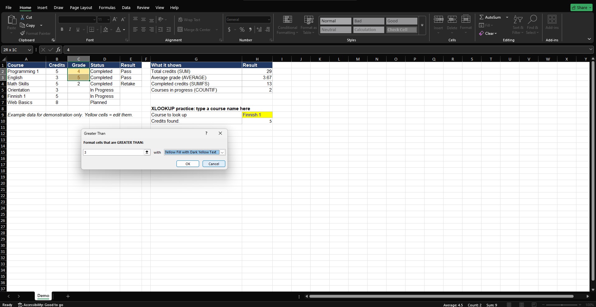
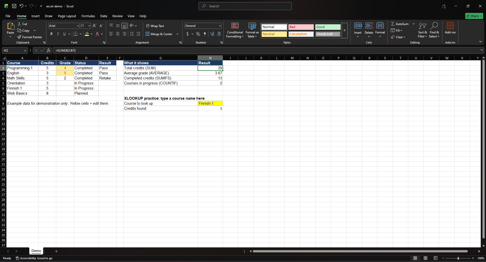
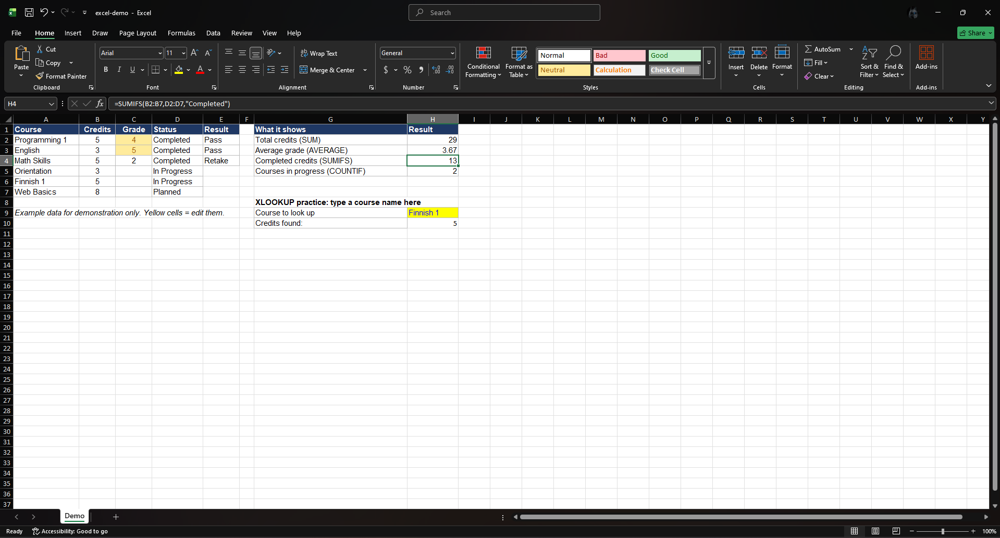
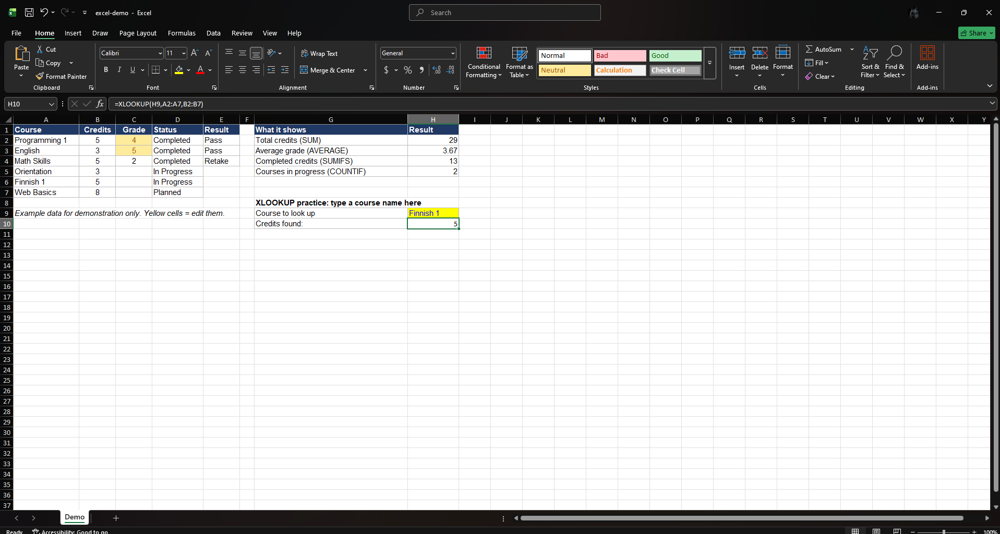

This page collects the Excel formulas I practised, with the result of each one. All screenshots come from a small demo workbook with example data (it is not my real study record).
This rule highlights grades that are greater than 3 in yellow fill and dark yellow text.

Adds all the credits in cells B2 to B7. The result is 29 total credits. Use it to total a column automatically.
=SUM(B2:B7)

Adds the grades in C2 to C7 and divides by the number of grades, which is 3. Excel ignores the empty cells C5 to C7, so the result is (4 + 5 + 2) / 3 = 3.67. Use it to find the mean of a set of numbers.
=AVERAGE(C2:C7)
Adds the credits in B2:B7 only for the rows where the status in D2:D7 is "Completed". The result is 13. Use it to total only the values that meet a condition.
=SUMIFS(B2:B7,D2:D7,"Completed")

Counts the cells in D2:D7 whose status is "In Progress". The result is 2 (Orientation and Finnish 1). Use it to count items in a category.
=COUNTIF(D2:D7,"In Progress")
Takes the course name typed in H9, finds it in A2:A7 and returns the credits from B2:B7. For "Finnish 1" the result is 5. Use it to fetch information from a table without searching the rows by hand.
=XLOOKUP(H9,A2:A7,B2:B7)

Example data for demonstration only.